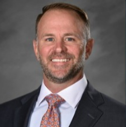

Panelist
Behfar Jahanshahi
Founder and CEO, InterWorks
Behfar started InterWorks in 1996 as a student at Oklahoma State University, providing networking and IT services to local businesses, and some of those first clients are still with InterWorks today. Thirty years later, InterWorks is a global IT, data and AI consultancy with more than 280 people, still headquartered in Stillwater. InterWorks has been named one of Forbes’ Small Giants, and Behfar has been recognized as one of Oklahoma’s Most Admired CEOs. He also serves on OSU’s MSIS advisory board. Today, AI is central to how InterWorks works, both in the solutions it builds for clients and in how its own people work every day.

Panelist
Cory Williams
Owner and Broker, Look Properties
Cory is an attorney, a Realtor, and a developer, all at once. He grew up in Stillwater, came back after law school, and runs Look Properties, a brokerage and property management company on Husband Street. He also spent a decade representing Stillwater in the Oklahoma House. He runs businesses built on contracts, leases, licenses, and trust, which is exactly where AI gets interesting and risky.

Panelist
Dr. Brenda Rolls
President and CEO, Frontier Electronic Systems
Brenda has led Frontier Electronic Systems since 2008. FES was founded in Stillwater in 1973 by two OSU people who wanted to keep high-tech jobs in town, and it still builds high-reliability electronics for space flight, Navy ships, missiles, and aircraft from an 86,000 square foot facility on West 6th. Brenda holds a doctorate in psychology, is an OSU business graduate, serves on the OCAST OSTRaD board, and is the former chair of the Oklahoma Space Industry Development Authority.

Moderator
Alane Zannotti
President and CEO, Stillwater Chamber of Commerce
Alane is asking the questions today. The one every panelist was given in advance: if you were starting your business today, in the age of AI, what would you do differently? Bring your own question, there is audience Q&A at the end. Stand, say your name and your business, then ask.